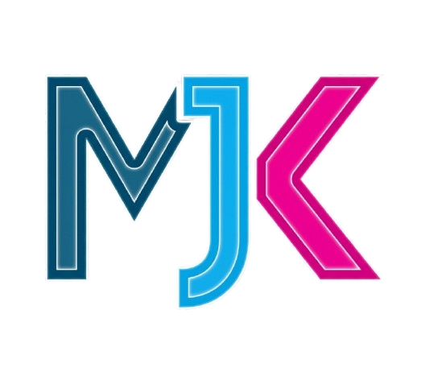
DOKUMENTASI ARSITEKTUR, METODOLOGI WATERFALL, USE CASE, FLOWMAP & ANALISIS VISUAL ANTARMUKA
Panduan Resmi Spesifikasi Sistem, SDLC Waterfall Model Bercabang, Detailed Branched Use Case Diagram per User Role, Diagram Visual Flowmap Bercabang, Berkas Kode A1-C6, Matriks Hak Akses 7 Peran Pengguna, serta Penjelasan Komprehensif Tangkapan Layar (17 Screenshots Per Role)
Pendahuluan & Profil Sistem Enterprise
PT. MODERN JAYA KONTRUKSI
Enterprise Asset Management & Digital Construction ERP Software
Aplikasi ERP Asset Management PT. Modern Jaya Konstruksi dikembangkan secara khusus dari awal (dari nol) untuk mengintegrasikan seluruh operasional proyek konstruksi, manajemen berkas tiga tingkat, pelacakan finansial, penawaran harga vendor, absensi geolokasi staf, hingga fitur komunikasi instan antar user role.
Melalui implementasi sistem ini, setiap unit kerja (Superadmin, Proyek Admin, Admin Monitoring, Engineering, Finance, Procurement, dan HRD) memiliki pintu akses terpusat untuk memantau siklus hidup proyek secara transparan, otomatis, dan akurat tanpa jeda.
Arsitektur Teknologi (Tech Stack)
- Next.js 14 (App Router) & React 18
- Tailwind CSS (Custom Design Token System)
- Lucide React Icons & Responsive Layout
- Axios Interceptors & BroadcastChannel API
- Node.js + Express.js (REST API Engine)
- Prisma ORM + Relational SQLite Database
- JWT Authentication & RBAC Authorization
- XLSX & Multer Engine (Automatic Document Parser)
Metodologi Pengembangan Software (SDLC Waterfall Model Bercabang)
Pengembangan aplikasi dilaksanakan secara terstruktur menggunakan metodologi Waterfall SDLC Bercabang (Detailed Branched Waterfall Model) yang memetakan sub-aktivitas dan hasil keluaran (deliverables) pada setiap fasenya:
Use Case Diagram Bercabang Per Role (Detailed Branched Use Case)
Diagram Use Case di bawah ini secara spesifik memetakan cabang-cabang fungsionalitas (Use Cases) yang dapat diakses oleh masing-masing dari 7 Aktor (User Roles):
Diagram Visual Alur Kerja Sistem Bercabang (Branched Flowmap)
Diagram Flowmap bercabang di bawah ini menggambarkan alur eksekusi bercabang berdasarkan peran pengguna hingga proses sinkronisasi real-time instan:
Klasifikasi Kode Berkas 3 Tingkat (A1 - C6)
Setiap berkas dokumen yang diunggah ke dalam sistem secara otomatis diklasifikasikan ke dalam 3 folder utama dengan 12 kode berkas unik:
| Kategori Folder | Kode | Nama Tipe Berkas | Deskripsi & Fungsi Berkas |
|---|---|---|---|
| Folder 1: Klien | A1 | SPK |
Surat Perintah Kerja resmi dari pihak Klien. |
| A2 | PENAWARAN_FINAL |
Dokumen penawaran harga final yang disetujui Klien. | |
| A3 | DRAWING_AS_BUILT |
Gambar teknis akhir sesuai hasil terpasang di lapangan. | |
| A4 | INVOICE |
Berkas penagihan pembayaran resmi kepada Klien. | |
| Folder 2: Subkon | B1 | SUBKON_DOCS |
Berkas kontrak, SPK subkon, & berita acara vendor. |
| B2 | RFQ_SCAN_KOSONG |
Scan berkas permintaan penawaran harga (RFQ) subkon. | |
| Folder 3: Internal | C1 | DRAWING |
Gambar teknik & perancangan internal tim engineering. |
| C2 | FOTO |
Foto fisik dokumentasi progres pekerjaan proyek. | |
| C3 | RAB |
Rencana Anggaran Biaya internal operasional proyek. | |
| C4 | PENAWARAN_DRAFT |
Draft perkiraan penawaran harga proyek internal. | |
| C5 | BOQ |
Bill of Quantities (Hasil Parser Excel Rincian Item). | |
| C6 | FORECAST_COST |
Proyeksi perkiraan biaya & analisis margin keuntungan. |
Matriks Otorisasi Hak Akses Detail 7 User Role
Setiap peran pengguna memiliki batasan otorisasi yang spesifik untuk menjaga keamanan data perusahaan:
| User Role | Tambah Proyek | Akses Berkas Klien (A1 - A4) | Akses Berkas Subkon (B1 - B2) | Akses Berkas Internal (C1 - C6) | Akses Khusus / Finansial |
|---|---|---|---|---|---|
| SUPERADMIN | ✅ Eksklusif | ✅ Full Access / Edit, Tambah, Hapus, Unggah (A1-A4) | ✅ Full Access / Edit, Tambah, Hapus, Unggah (B1-B2) | ✅ Full Access / Edit, Tambah, Hapus, Unggah (C1-C6) | Kelola Staf, Master Data, Audit Log, PO Release, Full CRUD |
| PROYEK_ADMIN | ❌ Tersembunyi | ✅ Upload & Edit (A1,A2,A3,A4) | ✅ Upload & Edit (B1) ✅ View (B2) |
✅ Upload & Edit (C2) ✅ View (C1,C3) |
Manual Tracking Spreadsheet, Buka Folder Doc |
| ADMIN_MONITORING | ❌ Tersembunyi | ✅ View & Unduh (A1-A4) | ✅ View & Unduh (B1-B2) | ✅ View & Unduh (C1-C6) | Monitoring Real-Time Laporan, Export ZIP All File |
| ENGINEERING | ❌ Tersembunyi | ✅ Upload & Edit (A3) ✅ View (A1,A2) 🔔 Notif (A4) |
✅ Upload & Edit (B2) ✅ View & Notif (B1) |
✅ Upload & Edit (C1,C3,C4,C5,C6) ✅ View (C2) |
Riwayat Kerja Teknis, Form & Tracking RFQ |
| FINANCE | ❌ Tersembunyi | ✅ View (A2,A4) | ✅ View (B1,B2) | ✅ View (C3,C4,C5,C6) | Rilis Purchase Order (PO), Kelola Penagihan & Termin |
| PROCUREMENT | ❌ Tersembunyi | ✅ View (A2,A3) | ✅ View (B2) | ✅ Edit (C5) | Edit Harga Satuan Item Procurement & Evaluasi Subkon |
| HRD / STAF | ❌ Tersembunyi | ❌ Terbatas | ❌ Terbatas | ❌ Terbatas | Rekapitulasi Absensi Geotagging & Laporan Kerja |
Dokumentasi Visual & Analisis Komprehensif Antarmuka Per User Role
Berikut ini adalah dokumentasi visual komprehensif berupa tangkapan layar (screenshots) dari seluruh 7 User Roles beserta penjelasan fungsi operasional, elemen antarmuka, dan alur kerjanya:
7.1 User Role: SUPERADMIN (Root Administrative Control)
Role Superadmin memegang otorisasi sistem tingkat tertinggi (Root Administrative Control). Peran ini memiliki tanggung jawab strategis dalam membuat proyek baru, mengelola akun seluruh staf, serta mengatur master data perusahaan.

Latar Belakang & Fungsi Utama: Dashboard Superadmin bertindak sebagai pusat kontrol eksekutif (Executive Command Center) untuk memantau seluruh portofolio proyek konstruksi secara real-time. Halaman ini menyajikan tabel direktori proyek master yang memuat kode entitas unik perusahaan (MJK, DJI, IRI), nama proyek, deskripsi pekerjaan, tanggal pembuatan, serta status pengerjaan.
Fitur Akses Khusus: Hanya akun ber-role Superadmin yang dapat melihat dan mengeksekusi tombol + Tambah Proyek di kanan atas antarmuka untuk menginisiasi proyek baru beserta direktori folder berkas 3-tingkat.

Latar Belakang & Fungsi Utama: Tampilan ini menyajikan pengawasan nilai penagihan proyek (Nilai Penagihan, PPh 2%, Grand Total, Status Penagihan, dan Skema Termin) untuk seluruh proyek yang dikelola oleh perusahaan.

Latar Belakang & Fungsi Utama: Tampilan pengawasan anggaran modal BoQ, realisasi pengeluaran proyek, perhitungan otomatis sisa modal, serta persentase efisiensi anggaran pengadaan.

Latar Belakang & Fungsi Utama: Tampilan pengawasan progres fisik proyek manual tracking, status pekerjaan, nilai termin DPP, persentase pembayaran, serta kelengkapan dokumen SPK, BOQ, dan Drawing.

Latar Belakang & Fungsi Utama: Modul ini digunakan oleh Superadmin untuk mendaftarkan dan mengelola kode entitas anak perusahaan (MJK, DJI, IRI) sebagai identitas resmi proyek.

Latar Belakang & Fungsi Utama: Digunakan untuk mencatat direktori mitra kerja/klien utama perusahaan beserta informasi penanggung jawab untuk penataan berkas Folder 1 Klien.

Latar Belakang & Fungsi Utama: Direktori master vendor subkontraktor yang akan terhubung secara otomatis ke modul Data Subkon dan Tracking RFQ Engineering.

Latar Belakang & Fungsi Utama: Pengawasan relasi parent-child antara proyek dengan vendor subkontraktor, lengkap dengan persentase termin pembayaran dan penautan berkas RFQ/BOQ/SPK.
7.2 User Role: PROYEK_ADMIN (Lapangan & Operational Tracking)
Role Proyek Admin bertanggung jawab atas pencatatan harian di lapangan, penginputan spreadsheet manual tracking, pengelolaan berkas 3 tingkat, serta tracking termin subkontraktor.

Latar Belakang & Fungsi Utama: Format spreadsheet interaktif untuk pembaruan cepat data lapangan dengan fitur sticky action column pada tombol aksi pengeditan.

Latar Belakang & Fungsi Utama: Penginputan rincian nilai kontrak jasa subkon, persentase skema termin (DP, Termin 1-8), serta penautan berkas dokumen penagihan vendor.

Latar Belakang & Fungsi Utama: Pengelolaan dokumen resmi dari/kepada Klien (A1: SPK, A2: Penawaran Final, A3: Drawing As-Built, A4: Invoice Penagihan).

Latar Belakang & Fungsi Utama: Pengelolaan berkas kontrak vendor subkon (B1: Subkon Docs & SPK Subkon, B2: RFQ Scan Kosong Penawaran Vendor).

Latar Belakang & Fungsi Utama: Pengelolaan berkas internal proyek (C1: Drawing, C2: Foto Progress, C3: RAB, C4: Draft Penawaran, C5: BOQ, C6: Forecast Cost).
7.3 User Role: ADMIN_MONITORING (Independent Audit Oversight)
Role Admin Monitoring merupakan peran pengawas independen (Audit Oversight Role) yang bertugas memantau seluruh transparansi progres pekerjaan dan kelengkapan dokumen proyek.

Latar Belakang & Otorisasi Pengawasan: Tampilan utama pengawasan proyek tanpa tombol modifikasi/tambah untuk menjaga independensi audit berkas.

Latar Belakang & Otorisasi Pengawasan: Menampilkan seluruh aktivitas update berkas dan status pengerjaan proyek dari seluruh divisi.

Latar Belakang & Otorisasi Pengawasan: Pemantauan realisasi termin pembayaran subkontraktor serta validasi dokumen pendukung penagihan vendor.

Latar Belakang & Otorisasi Pengawasan: Hak akses melihat dan mengunduh berkas SPK Klien, Penawaran Final, As-Built Drawing, dan Invoice Penagihan.

Latar Belakang & Otorisasi Pengawasan: Hak akses pengawasan dokumen kontrak subkon dan berkas scan penawaran RFQ vendor.

Fitur Bulk Package Export ZIP: Dilengkapi tombol Download All untuk memaketkan 100% seluruh dokumen proyek ke dalam satu berkas arsip ZIP.
7.4 User Role: ENGINEERING (Perencanaan Teknis & Tracking RFQ)
Role Engineering bertanggung jawab atas perencanaan teknis konstruksi, perancangan gambar (Drawing), penyusunan RAB/BOQ, tracking RFQ subkon, serta obrolan tim real-time.
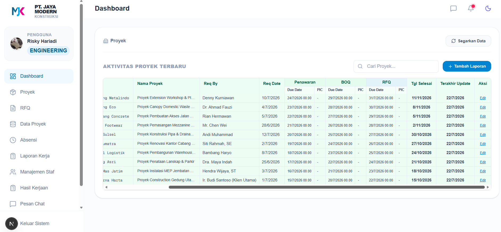
Latar Belakang & Fungsi Utama: Rekapitulasi proyek teknis yang membutuhkan perancangan gambar (C1: DRAWING), penyusunan RAB (C3), dan verifikasi BOQ (C5).
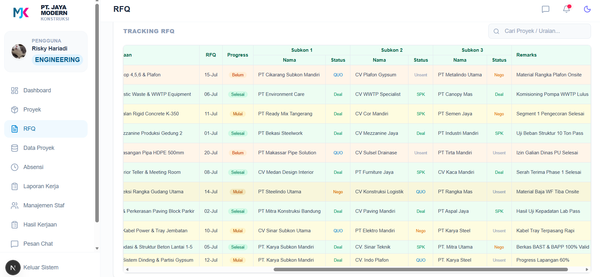
Latar Belakang & Fungsi Utama: Penginputan uraian pekerjaan, rfq date, progress, serta evaluasi status penawaran vendor subkon (Unsent, QUO, Nego, SPK, Deal).
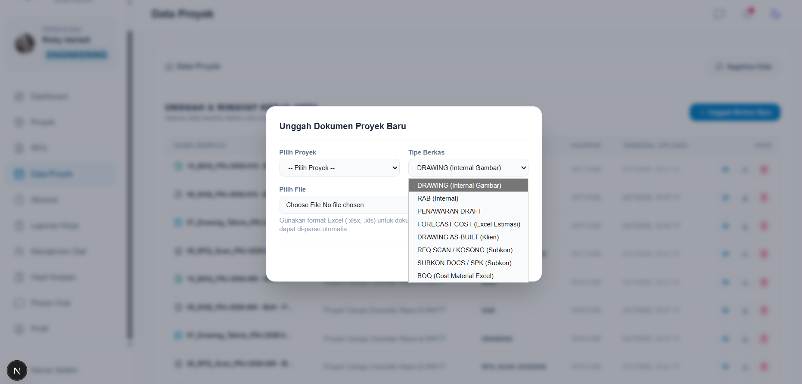
Automatic Excel Parsing: Saat berkas Excel BOQ diunggah, sistem parser backend mengekstrak volume, unit, dan rate ke database secara otomatis.

Real-Time Chat Notification: Notifikasi pesan obrolan instan antar user role untuk percepatan koordinasi teknis di lapangan.

Direct File Transfer: Fitur pengiriman lampiran berkas biner langsung di ruang chat dengan nama file asli yang utuh.
7.5 User Role: FINANCE (Manajemen Keuangan & Penagihan)
Role Finance bertanggung jawab atas pencatatan termin penagihan klien, pemotongan PPh 2%, perhitungan Grand Total, rilis dokumen PO, serta verifikasi invoice A4.
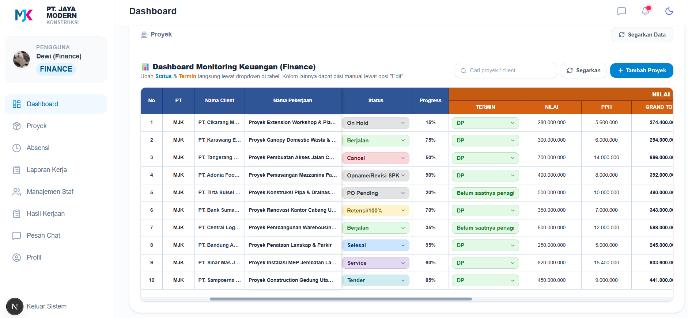
Latar Belakang & Pengelolaan Arus Kas: Monitoring nilai kontrak, PPh 2%, Grand Total dengan format titik pemisah ribuan, serta dropdown status/termin.
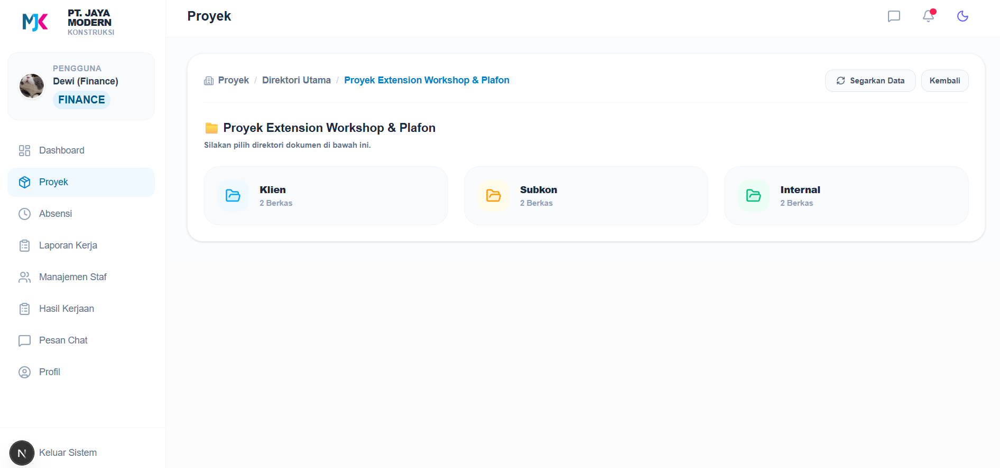
Latar Belakang & Fungsi Utama: Pengawasan daftar proyek yang membutuhkan verifikasi kelengkapan dokumen penagihan sebelum penyerahan invoice.
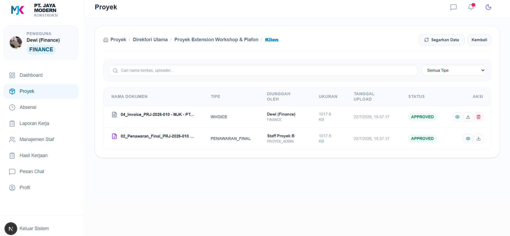
Latar Belakang & Fungsi Utama: Pengelolaan dokumen penawaran final (A2) dan invoice penagihan resmi (A4) kepada pihak Klien.
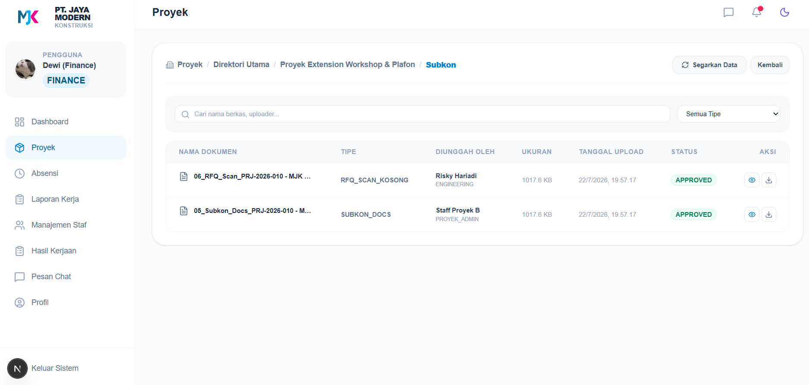
Latar Belakang & Fungsi Utama: Verifikasi berkas tagihan subkontraktor (B1) sebelum rilis pencairan termin pembayaran vendor.
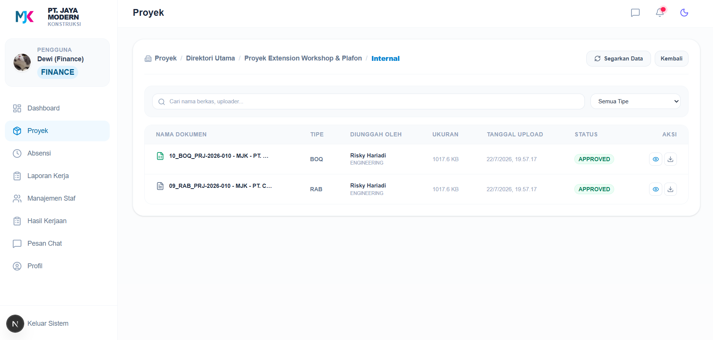
Latar Belakang & Proteksi Data: Akses pemeriksaan berkas estimasi biaya internal (C3, C5, C6) untuk validasi margin keuntungan proyek.
7.6 User Role: PROCESSING (PROCUREMENT) (Pengadaan Material & Evaluasi Vendor)
Role Processing / Procurement bertugas mengelola pengadaan barang/jasa, menganalisis modal BoQ & pengeluaran proyek, menghitung sisa modal otomatis, serta evaluasi vendor.
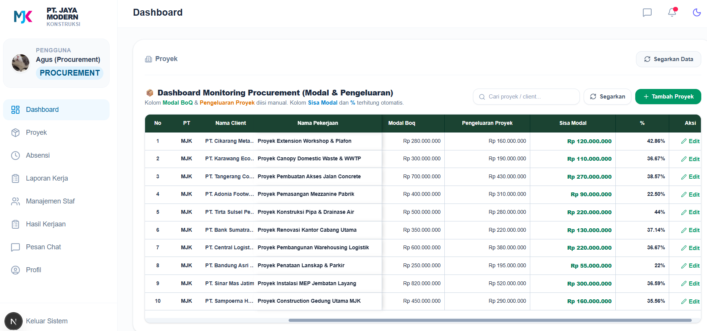
Rumus Formula Otomatis: Penghitungan dinamis Sisa Modal (Modal BoQ - Pengeluaran) dan persentase efisiensi anggaran pengadaan.
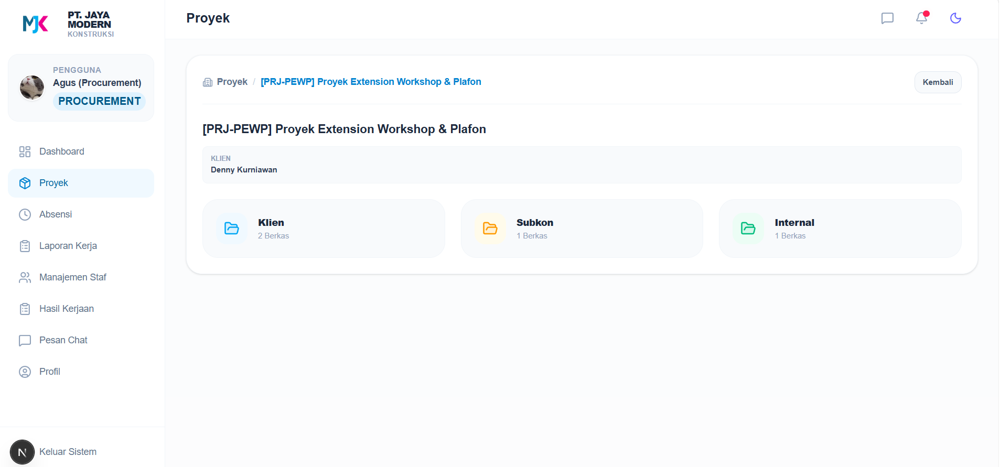
Latar Belakang & Fungsi Utama: Pengawasan daftar proyek pengadaan serta fasilitas penyesuaian (adjustment) tarif harga satuan item BOQ.
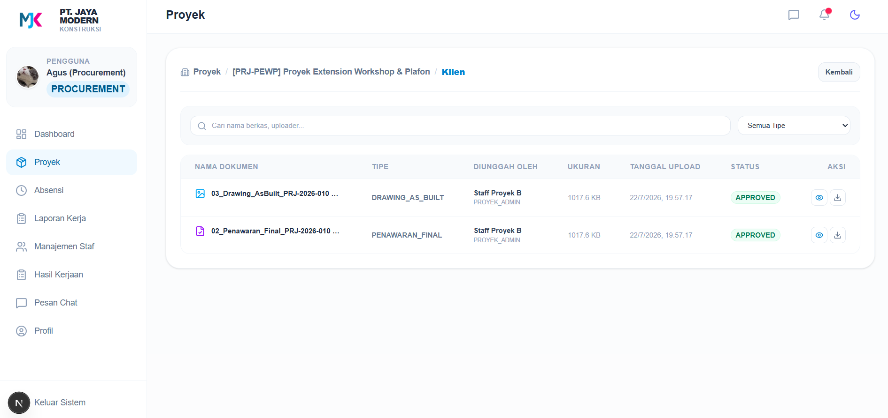
Latar Belakang & Fungsi Utama: Akses peninjauan spesifikasi material pada dokumen penawaran final (A2) dan drawing teknis terpasang (A3).
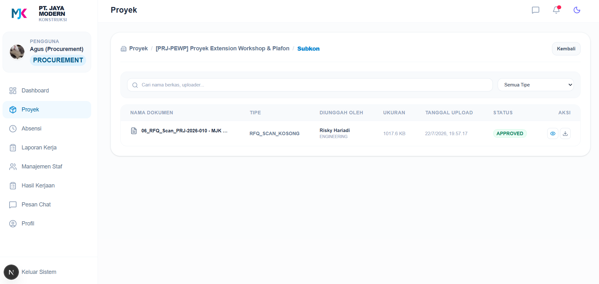
Latar Belakang & Fungsi Utama: Peninjauan berkas scan penawaran harga vendor subkon (B2: RFQ Scan Kosong) untuk pemilihan subkon terbaik.
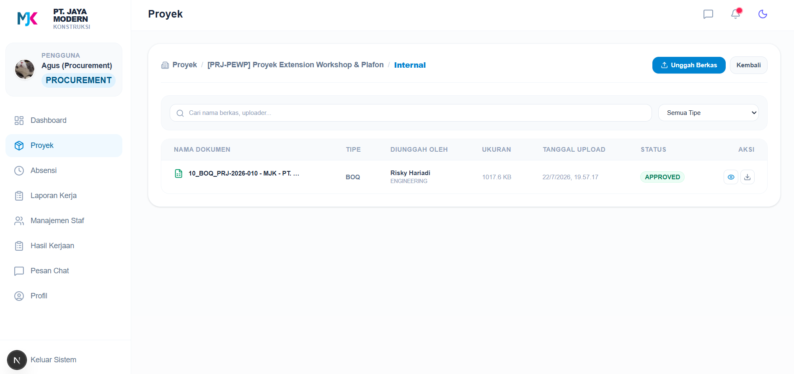
Latar Belakang & Fungsi Utama: Pengelolaan berkas Bill of Quantities (C5) hasil parser Excel untuk penyesuaian harga satuan pengadaan.
7.7 User Role: HRD & STAF (Presensi Geotagging & Laporan Kerja)
Role HRD dan Staf bertanggung jawab atas pengelolaan kedisiplinan kehadiran karyawan melalui teknologi absensi geolokalidasi (swafoto + GPS) serta pelaporan hasil kerja harian staf di area proyek.

Latar Belakang & Geotagging Verification: Rekapitulasi presensi kehadiran seluruh personel proyek dilengkapi foto swafoto (selfie) dan koordinat lokasi geografis GPS.

Latar Belakang & Pencatatan Progres Harian: Pelaporan rincian aktivitas, lokasi pengerjaan, jam kerja, dan foto bukti fisik hasil kerja harian karyawan.